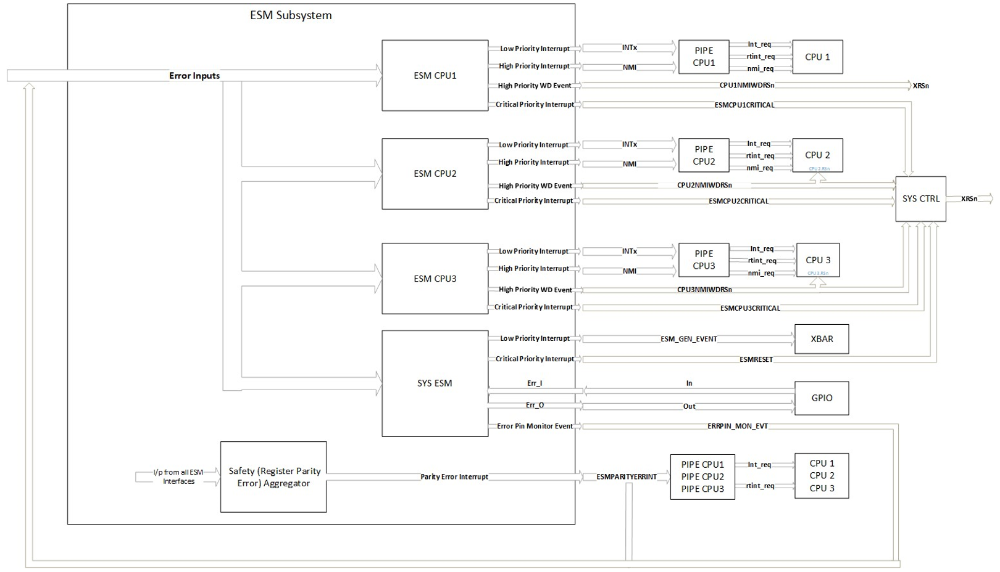

Error Signaling Module (ESM)#
Overview#
In this module, you will:
Learn what the ESM is, and the role it plays in analyzing system errors.
Become familiar with common applications of the ESM.
Understand the submodules of the ESM subsystem
Introduction#
The Error Signaling Module (ESM) provides a systematic consolidation of responses to error events. The ESM allows the user to predefine sets of actions to be carried out upon an error condition, and it also allows the ability to reprogram these actions.
The Error Signaling Module (ESM) centralizes fault reports and provides mechanisms to classify errors by severity and to provide programmable error response.
Provides centralized view of all errors across the devices and enhances user friendliness
Application of the ESM#
All device level error events are reported to ESM to determine what caused the error and what action needs to be taken for the particular error event based on configuration in ESM. For each individual error input the configuration can be set to assert any of below:
Assert an Output Error Status Pin (ERRORSTS)
Generate an Interrupt (INTx, NMI) to a CPU
Event Input for XBARs (only from the system ESM module)
Each individual error input can be chosen to assert the desired priority interrupt in the ESM configurations. Priority levels can be defined as below:
Low Priority Interrupt
High Priority Interrupt
Critical Priority Interrupt
These interrupt priority levels can influence the corresponding mapped output as shown in the F29h85x device integration diagram below:


Figure 1: Device High-Level Block Diagram#
What is the ESM Subsystem?#
The ESM Subsystem consists of three submodules:
ESM CPU
System ESM
Safety Aggregator (ESM Register Parity Aggregator)
ESM CPU#
One ESM Instance for per CPU in the device meant to take individual action on specific CPU individually.
Inputs: The error inputs which are common to all ESM Subsystem instances.
Outputs: 1. Low Priority Interrupt 2. High Priority Interrupt 3. High Priority WD Event (Event triggered by Watchdog timeout on High Priority Interrupt): Similar functionality as NMIWD on C28x devices 4. Critical Priority Interrupt
If error event occurs that needs specific CPU’s attention to it without affecting other CPU, the user could employ the error event action to specific ESMCPU instance. For example, if the CPU1 TMU ROM parity error occurred in device during run time that needs CPU1’s attention the user needs to configure the error event priority in ESMCPU1 configurations to assert high priority interrupt output at ESM subsystem level. Now based on the device integration diagram shown above high priority Interrupt then triggers an NMI to Interrupt Controller and propagates to CPU1 so that appropriate action to the error event can be taken in the NMI ISR and bring system to safe state.
System ESM#
One SYSESM (System ESM) Instance per device meant to act at system level. For example, on error occurrence communicating the error externally on the Error Pin (ERRORSTS) to signal severe device failure or cause device reset (XRSn) to put device in safe state.
Inputs: The error inputs which are common to all ESM Subsystem instances.
Outputs: 1. Low Priority Interrupt 2. Critical Priority Interrupt 3. Error Pin Output 4. Error Pin Monitor Event: Error pin monitoring and error detection output
If error event occurs that needs to set the Error status (ERRORSTS) Pin to draw attention to external world signaling severe device failure, the user could employ the error event action to SYSESM. For example, if the error occurred in device during run time that needs the user to issue device reset (XRSn). Then user needs to configure the error event priority in SYSESM configurations to assert critical priority interrupt output at ESM subsystem level. Now based on the device integration diagram shown above Critical Priority Interrupt then triggers ESMRESET pulse signal that propagates to system control to trigger XRSn (based on ESMXRSNCTL register) and bring system to safe state.
Safety Aggregator (ESM Register Parity Aggregator)#
One Parity Aggregator Instance to safeguard the ESM Configuration registers against any parity errors. Each ESM Instance has an EDC (Error Detection and Correction) Control Interface that works with Safety Aggregator for parity detection. Safety Aggregator is used to aggregate all EDC Controller Interface for each ESM Instance.
Inputs: Input from EDC (Error Detection and Correction) Control Interfaces of all ESM Instances (ESM CPU and SYSESM)
Output: Parity Error Interrupt If parity error is detected in ESM Register configurations and interrupt is enabled then ESM_PARITYERRINT is triggered and fed back as error event to ESM subsystem for CPU to act and put system in safe state.
Test Your Knowledge!#
Question 1
What ESM configuration is needed to generate an error event input to the EPWM X-BAR?
Answer
You must configure an error event to generate a Low Priority Interrupt in the SYSESM instance. Upon an error occurrence, the SYSESM instance generates an ESM_GEN_EVENT to the EPWM X-BAR. ESM_GEN_EVENT can be used to Trip an EPWM output and put the system in a safe state.
Summary#
The key takeaway from this training module is that the ESM is able to provide comprehensive error reporting and consolidate error responses for better management and mitigation of error events across the device.